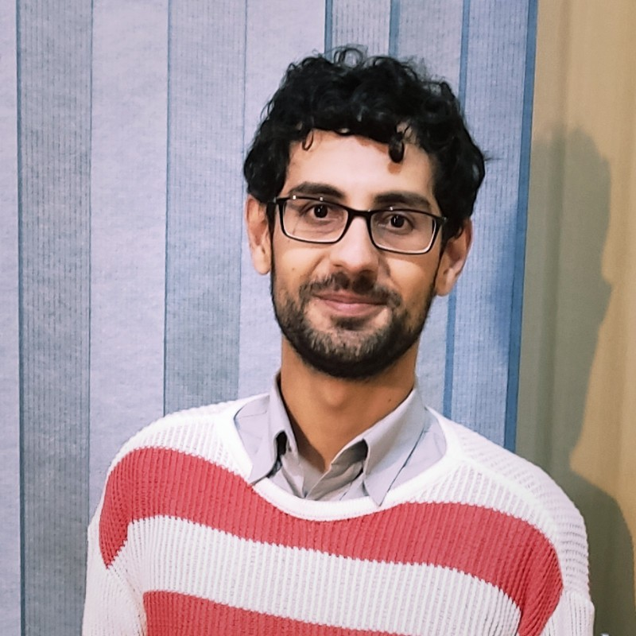

Understand before defining
Good technical decisions depend on the context around the question, not only the first description of it.
Our outlook
Zeitona is not defined by a single technical field or present-day catalogue. The company’s durable focus is the work of understanding difficult questions, developing technology, and collaborating where different forms of knowledge need to meet.
Our outlook
A technical problem is shaped by more than its specification. People, evidence, institutional requirements, practical constraints, and uncertainty all influence what a responsible answer looks like.
Zeitona’s identity is broad by design. Research, experimentation, engineering, and collaboration can each have a place when they help the work progress. This leaves room for the company to evolve without rewriting its identity around every new project or technical direction.
How we think
Good technical decisions depend on the context around the question, not only the first description of it.
Claims, milestones, and results belong on the site only when they can be supported. The same care should apply to technical work.
Companies, universities, researchers, institutions, programmes, and consortia may contribute different knowledge to a shared objective.
People
The company is represented here by the two people identified in its approved, site-hosted founder portraits. Personal details beyond the verified names and founder role are intentionally omitted.

Co-founder
Co-founder
Working with others
Some projects are direct and bilateral. Others are shaped by institutional programmes, university relationships, research questions, or multi-party arrangements. Zeitona’s broad technological identity leaves room for each of these structures.